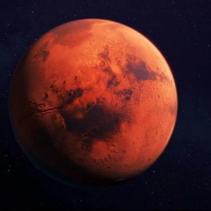
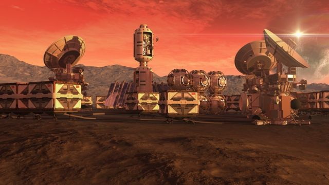

Astronomia

Desde os primórdios da humanidade o homem olha para o céu imaginando o que há além das estrelas, da imensidão escura que esconde tantos segredos. Diversas conquistas já foram realizadas, a construção de satélites e viagem a lua, estas possibilitaram que a humanidade avançasse rumo ao desconhecido e aprendesse um pouco da grandiosidade do universo
A ambição de colonizar outros planetas move a ciência cada dia mais em busca de meios para realizar tal feito. O planeta vermelho, Marte, desperta o interesse do homem a décadas e nos últimos tempos recentes descobertas tem aumentado as expectativas sobre a colonização. “Curiosity” robô enviado pela NASA em 2012 encontrou vestígios de água congelada no planeta, existindo então a possibilidade de Marte ainda ser capaz de habitar vida, ou seja, um passo a mais rumo a colonização marciana.
Nos últimos meses os olhos do mundo se voltaram novamente para o satélite natural que nos circunda, a Lua, com a recente descoberta de água no solo lunar a ideia de sustentar uma base aproveitando os recursos naturais da lua está mais próxima do que nunca. O local para colocar uma base lunar será escolhido tendo em mente onde a água está, explica Hannah Sargeant. Segundo a pesquisadora, o objetivo é desenvolver "uma maneira mais sustentável de fazer a exploração espacial"
Os avanços não param e com as melhorias tecnológicas ocorrendo cada vez com maior frequência, a ideia de que o céu é o limite nunca esteve tão errada quanto agora. A agência norte americana planeja enviar uma mulher e um homem a superfície lunar em 2024 para se prepararem para o “próximo salto gigante” que é a exploração humana de Marte em 2030.
Mudanças significativas estão prestes a acontecer e o sentimento de euforia nunca esteve tão alto, a humanidade está dando um passo imenso na exploração do universo e na conquista do vasto universo misterioso. A conquista da Lua já está ocorrendo, Marte é o próximo plano, depois disso o que aguarda o futuro? Ninguém sabe, mas uma coisa é certa o céu nunca foi o limite para olhos curiosos e almas conquistadoras.
Sobre o autor
Diego da Silva aluno do colégio Sesi Araguari, 17 anos cursando o terceiro ano do Ensino Médio. Astronomia é um assunto interessante de se discutir por isso a ideia deste artigo.
Aluno(a): Diego da Silva Viana Mendes